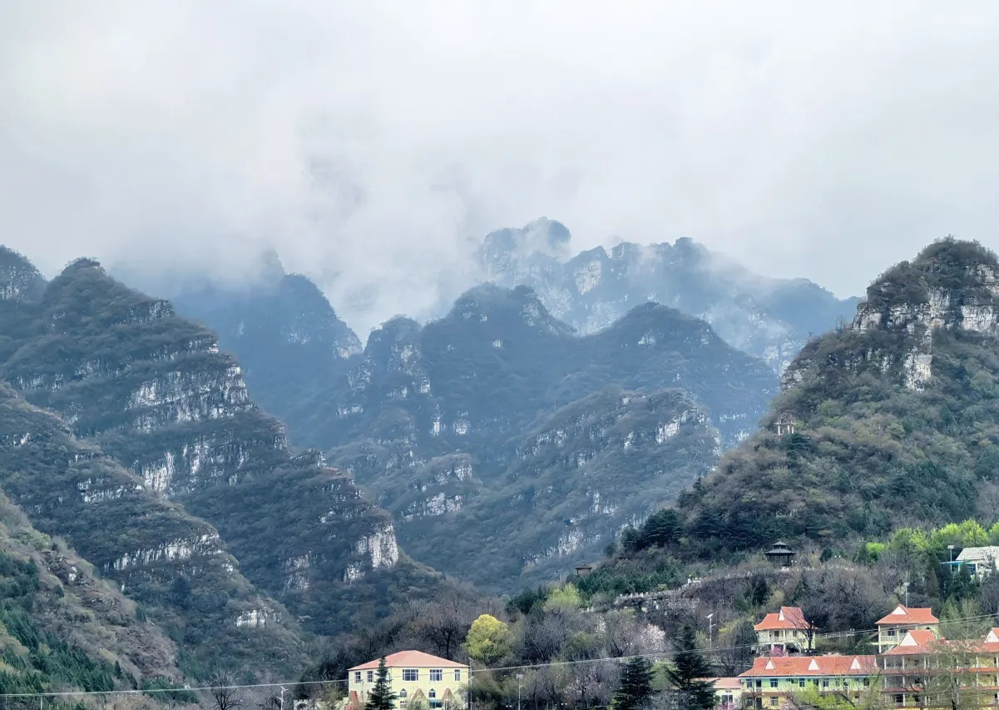
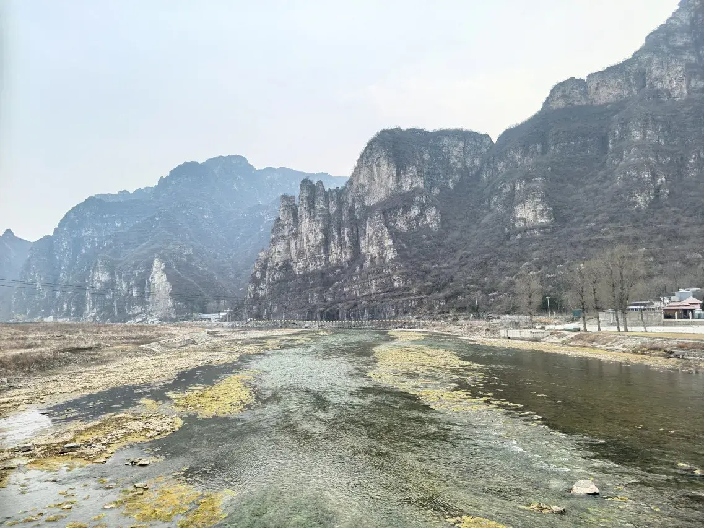

十渡漂流攻略
十渡漂流哪个好玩？先看你想刺激还是亲子玩水
十渡漂流和玩水点不少，不能只问“哪个最好”，更要看同行人群。年轻人和朋友聚会更适合刺激漂流；带孩子则要看水流、身高限制、换洗和休息；住在九渡村附近，可以把漂流、拒马河和院子玩水连成更轻松的一天。

先说结论：十渡漂流按这四类选
乐谷银滩：更适合追求刺激的漂流
乐谷银滩位于三渡一带，公开攻略里经常被提到“落差大、弯道多、湿身明显”。如果你们是年轻朋友、团建或想把漂流作为当天重点，乐谷银滩通常会比普通河道漂流更有存在感。
但它也更需要准备：换洗衣物、防水袋、溯溪鞋、毛巾、防晒和足够体力。带低龄孩子、老人或不想太刺激的人，不建议把这里作为唯一选择。
拒马乐园：适合把漂流和高空项目放在一起
拒马乐园在九渡附近，是十渡辨识度很高的综合项目区。这里的优势不是只有漂流，而是可以把漂流、索道、蹦极、峡谷飞人、高空观景放在同一个行程里。
栖犀小院位于九渡村别墅区，去拒马乐园比较顺。朋友出行可以让胆大的去蹦极，其他人坐缆道或看景；亲子家庭也可以只选择轻松项目，晚上再回小院烧烤、玩水、休息。


东湖港和誓言山：山水观景加漂流
东湖港适合想看山水、瀑布、玻璃栈道和成熟景区配套的游客。它不只是漂流，更像一个“景区游玩组合”。如果同行有老人、孩子或喜欢拍照的人，东湖港比单纯刺激漂流更稳。
誓言山则更适合把登山、玻璃栈道、山顶观景和漂流放在一起。它的漂流在十渡区域里相对刺激，通票类组合也常被游客用来控制预算。


带孩子玩水：不一定非要漂流
带孩子来十渡，很多时候“玩水”比“漂流”更重要。十二渡浅滩、拒马河边、七渡孤山寨的溪流和瀑布群，都更适合低龄孩子轻松玩水。孩子太小、身高不够、怕水或容易累时，强刺激漂流反而会影响体验。
漂流后住哪里方便
漂流一定会湿身，玩完以后最需要的是换洗、休息和吃饭。栖犀小院在九渡村，适合作为十渡漂流和玩水的住宿据点。小院共7间客房，均带独立卫浴，可住约17-20人，几家人或朋友一起住，洗漱和换衣更方便。
晚上可以在院子里烧烤、做饭、KTV、麻将棋牌，孩子也可以继续在儿童戏水泳池玩。这样行程不是“漂流完赶路回城”，而是“漂流完回院子继续放松”。
常见问题
十渡漂流哪个最刺激？
公开攻略里常提到三渡乐谷银滩、誓言山高山漂流和十八渡一带激流型项目更刺激。具体刺激程度受水量、季节和景区运营影响，出发前要确认。
十渡漂流适合小孩吗？
要看孩子年龄、身高、胆量和景区要求。低龄孩子更建议先选择拒马河边、浅滩、院内戏水池或轻量景区。
十渡漂流需要带什么？
建议带换洗衣物、毛巾、溯溪鞋或有后跟凉鞋、防晒、防水袋、驱蚊用品。手机、证件和贵重物品不要随意带上船。